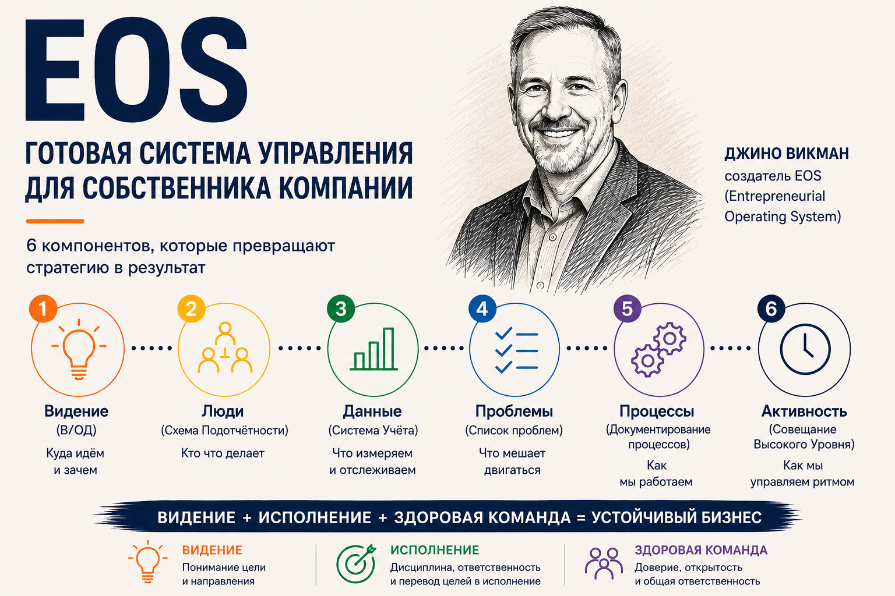
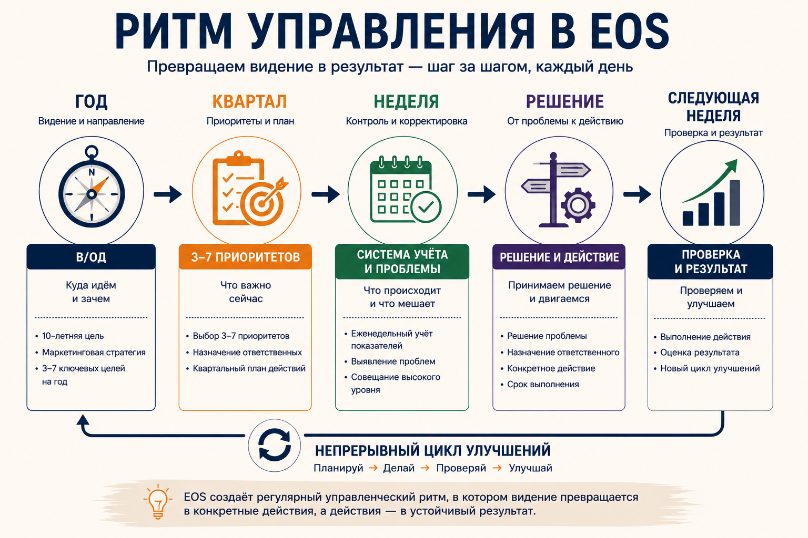
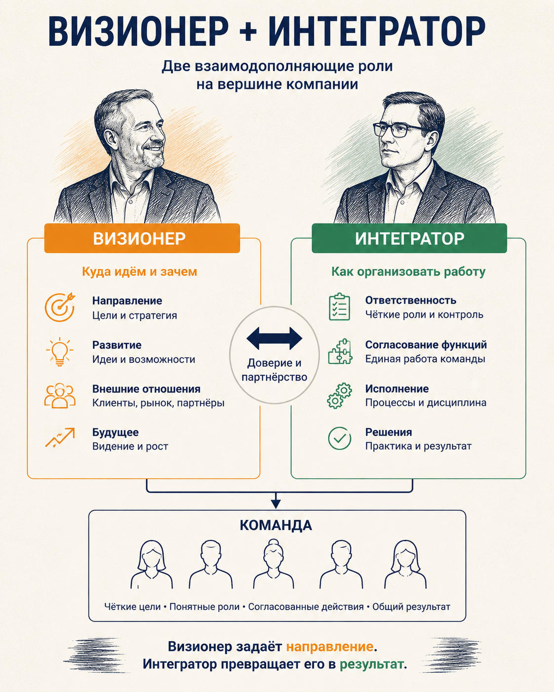

EOS: готовая система управления компанией
Мы начинаем серию о готовых системах управления для среднего бизнеса. Будем разбирать разные подходы: как они устроены, что в них действительно полезно и где их границы.
Первой рассмотрим EOS — одну из наиболее известных готовых операционных систем управления.
Её создал американский предприниматель Джино Викман.

Как появилась EOS
После школы Викман пошёл работать в механический цех, где изготавливал шестерни. Работа была тяжёлой, и довольно быстро он понял, что не хочет провести так всю жизнь.
Затем он занялся недвижимостью, получил лицензию агента по продаже недвижимости и начал строить собственный бизнес. К 23 годам он уже зарабатывал шестизначную сумму в год.
Но постепенно у него появилась другая цель. Его отец, Флойд Викман, был специалистом по обучению риелторов и построил собственную компанию — Floyd Wickman Courses.
Викман увидел, что за бизнесом отца стоит гораздо больше, чем просто успешная компания. Ему понравилось, как отец работал с людьми, обучал продавцов и строил организацию. И он решил: когда-нибудь он станет президентом этой компании. Отец такой перспективы не разделял.
Флойд Викман не хотел, чтобы дети приходили работать в его бизнес. Поэтому, когда сын заявил о своём желании, отец поставил условие:
Сначала продай недвижимости на $5 млн — потом поговорим.
Викман сделал это, и тогда отец согласился взять его в компанию. Но не в качестве руководителя. Викман начал снизу.
Прошёл разные участки бизнеса и через полтора года оказался в руководящей команде.
И тут его ждало совсем не то, чего он ожидал. Компания была в тяжёлом положении: краткосрочный долг приближался к $1 млн, а погасить его нужно было в течение трёх месяцев.
Викману было около 25 лет. Он считал, что бизнес можно спасти, и предложил отцу дать ему возможность это сделать. Отец согласился и дал сыну $100 тыс. и ключи от компании.
Из кризиса — в систему
Викману пришлось разбираться не с одной конкретной проблемой. Компания нуждалась в изменениях сразу во многих местах: кто принимает решения, кто за что отвечает, как руководители взаимодействуют между собой, как ставятся цели, как контролируется выполнение, как обнаруживаются проблемы и что происходит после того, как их обнаружили.
Постепенно Викман начал собирать инструменты, которые помогали ему управлять компанией, и одновременно всё лучше понимал собственную роль.
Его отец был сильным предпринимателем и человеком идей — Визионером.
Викман оказался человеком, который превращал эти идеи в конкретные действия и выстраивал работу организации — Интегратором.
Позже именно эти две роли станут одной из центральных идей EOS.
Через несколько лет компания была выведена из кризиса. В общей сложности он управлял компанией семь лет, после чего бизнес был продан.
И вот здесь история могла бы закончиться. Но именно тогда Викман понял, что ему на самом деле нравится делать.
После продажи бизнеса он начал помогать другим предпринимателям — сначала знакомым, затем всё большему числу владельцев бизнеса — и обнаружил закономерность.
Компании были разными, а проблемы — удивительно похожими.
Собственники хотели расти, но всё больше времени проводили в операционке. Руководители не всегда понимали, кто за что отвечает. Важные вопросы обсуждались снова и снова, но не решались. Цели существовали отдельно от ежедневной работы, а компания зависела от нескольких ключевых людей.
Викман обнаружил, что особенно хорошо умеет помогать предпринимателям наводить порядок именно в этой части бизнеса.
С сентября 2000 года он систематически развивал собственную систему, проверяя её на практике более чем в 50 компаниях. Этот период продолжался около шести лет: Викман оттачивал инструменты, отбрасывал то, что не работало, и добавлял то, чего не хватало.
Первоначально система называлась Business Accelerator Model & Process.
В июне 2006 года Викман дал ей название Entrepreneurial Operating System — EOS.
В сентябре 2007 года он самостоятельно издал книгу Traction, в которой подробно описал систему.
Как устроена EOS
В EOS шесть компонентов:
EOS рассматривает их как шесть областей, которые компания должна одновременно укреплять.
Все шесть компонентов работают ради трёх результатов, которые EOS формулирует как Vision, Traction и Healthy: прояснить направление компании, обеспечить движение к нему и сформировать здоровую, сплочённую руководящую команду.
1. Видение
Работа начинается с договорённости руководителей о том, какую компанию они хотят построить. Для этого используется В/ОД (Vision/Traction Organizer) — документ, который объединяет видение и план его осуществления.
Он отвечает на ключевые вопросы о ценностях компании, её фокусе, долгосрочной цели, маркетинговой стратегии, трёхлетнем видении, годовом плане и ближайших приоритетах.
В/ОД — центральный документ EOS: остальные основные инструменты системы должны помогать выполнять то, что в нём зафиксировано.
Таким образом, В/ОД связывает долгосрочное направление компании с конкретным планом действий.
Но чтобы двигаться к этим результатам, нужно определить, кто за них отвечает.
2. Люди
EOS начинает не с оценки сотрудников, а с определения ролей и ответственности.
Для этого используется Схема подотчётности (Accountability Chart).
В ней сначала определяются ключевые функции компании и места — роли, которые должны существовать для их выполнения. Затем на каждое место назначается конкретный человек.
EOS использует принцип «правильный человек на правильном месте».
«Правильный человек» — тот, кто соответствует ключевым ценностям компании.
«Правильное место» — роль, которую человек понимает, хочет выполнять и способен выполнять.
Для оценки используется Анализ персонала, который соединяет проверку соответствия ценностям и соответствия занимаемой роли. Для последнего применяется критерий GWC: человек должен понимать работу, хотеть её выполнять и обладать необходимыми возможностями для её выполнения.
В результате у каждой важной функции есть конкретный ответственный, а люди оцениваются не только сами по себе, но и относительно занимаемых ими ролей.
3. Данные
Чтобы руководители могли видеть, что происходит в компании между планами и решениями, EOS вводит следующий компонент — данные. Для этого в EOS есть Система учёта (Scorecard).
В неё включается ограниченное число показателей, которые руководство считает необходимыми для еженедельного контроля бизнеса. Для каждого показателя устанавливаются ответственный и целевое значение.
Система учёта обновляется каждую неделю, поэтому руководитель видит не только итоговые результаты, но и изменения, которые происходят до того, как проблема становится очевидной.
У руководства появляется единая цифровая картина состояния компании.
Но показатели только показывают отклонение. Они не решают его. Поэтому следующий вопрос: что делать, если показатель отклонился?
4. Проблемы
EOS превращает выявленные отклонения в Список проблем (Issues List), который постоянно ведёт руководящая команда.
Проблема не должна просто обсуждаться.
Для её решения используется Путь решения проблем (IDS): сначала определить настоящую проблему, затем обсудить её и после этого принять решение.
Проблема должна заканчиваться решением и ответственным действием.
EOS использует списки проблем на разных уровнях. В В/ОД находятся стратегические вопросы, а текущие проблемы руководящей команды попадают в список для регулярной работы на встречах.
Если одна и та же проблема возникает снова, значит, нужно изменить не отдельное действие, а сам способ работы.
Отсюда следующий компонент.
5. Процессы
EOS предлагает определить основные процессы компании, описать их в едином виде и сделать обязательными для всех сотрудников.
Речь не идёт о попытке подробно описать всю работу компании. Задача — выделить ключевые процессы, которые должны выполняться единообразно всей организацией.
Для этого используется Трёхэтапное документирование процессов.
Задача процессов — сделать результат воспроизводимым и уменьшить зависимость компании от отдельных сотрудников.
Результат — компания получает единый способ выполнения основных операций.
Но определить правильный способ работы ещё недостаточно. Нужно обеспечить его выполнение и одновременно не потерять связь с целями компании. Для этого EOS вводит последний компонент.
6. Активность
Активность отвечает за то, чтобы договорённости и планы действительно превращались в действия.
EOS переводит годовые цели в 90-дневные приоритеты (Rocks): компания выбирает 3–7 наиболее важных результатов на квартал и закрепляет за каждым ответственного. Дальше эти Приоритеты контролируются каждую неделю.
Для этого используется стандартное Совещание высокого уровня (Level 10 Meeting) с фиксированным ритмом:
- Переход;
- Система учёта;
- Обзор Приоритетов;
- Новости о клиентах и сотрудниках;
- Список дел;
- Путь решения проблем;
- Завершение.
Первые пять частей нужны для быстрой проверки состояния. Проблемы в этих разделах не обсуждаются.
Если показатель отклонён, приоритет не выполняется, возник вопрос по клиенту или сотруднику — проблема фиксируется и попадает в Список проблем.
Обсуждение происходит в шестой части встречи.
Там команда выбирает наиболее важные проблемы и последовательно проходит Путь решения проблем.
Логика здесь проста:
показатель отклонился → проблема попала в список → Путь решения проблем → решение → конкретное действие → проверка выполнения на следующей неделе.
То же самое происходит с квартальными Приоритетами:
Приоритет не выполняется → причина фиксируется как проблема → Путь решения проблем → решение → действие.
Именно поэтому встреча не превращается в обычное совещание, где каждый рассказывает о своих делах, а затем все начинают обсуждать возникшие вопросы.
В EOS для Совещания Высокого Уровня установлен фиксированный 90-минутный формат. Основная часть времени отводится решению проблем.
В этом и состоит смысл Активности: дисциплина, ответственность и регулярный ритм, которые превращают видение компании в последовательное исполнение.
Готовые инструменты
Для каждого элемента EOS разработан конкретный инструмент: готовый шаблон и инструкция по его применению.
| Задача | Инструмент EOS |
|---|---|
| Определить направление | В/ОД |
| Распределить ответственность | Схема подотчётности |
| Оценить соответствие людей ролям | Анализ персонала |
| Контролировать состояние бизнеса | Система учёта |
| Фиксировать и решать проблемы | Список проблем и Путь решения проблем |
| Стандартизировать основные процессы | Трёхэтапное документирование процессов |
| Переводить цели в исполнение | Приоритеты и регулярные встречи |
Ритм управления
EOS связывает управление компанией в три уровня: год, квартал и неделю.
Год. Руководство определяет цели компании и фиксирует их в В/ОД.
Квартал. Из годового плана выбираются 3–7 главных приоритетов на ближайшие 90 дней. За каждый назначается ответственный.
Неделя. Руководящая команда проводит регулярное Совещание высокого уровня: смотрит Систему учёта, проверяет Приоритеты и решает наиболее важные проблемы.

Собственник и руководитель: две разные роли
EOS разделяет две роли на вершине компании.
Визионер отвечает за направление бизнеса: развитие компании, новые идеи, ключевые внешние отношения и культуру.
Интегратор отвечает за ежедневное управление: согласует работу основных функций, следит за исполнением решений и держит руководящую команду в общей системе ответственности.
В EOS эти роли фиксируются как отдельные места в Схеме Подотчётности. Это не обязательно собственник и генеральный директор: роли определяются функциями, а не названием должности.
В небольшой компании их может занимать один человек. По мере роста бизнеса роли часто разделяются между собственником и руководителем.
Интегратор выступает связующим звеном между основными функциями компании и отвечает за то, чтобы они работали как единая команда.
Для собственника здесь меняется сама модель работы:
Визионер определяет, куда и зачем двигаться.
Интегратор организует работу компании так, чтобы это произошло.

Это одна из центральных идей EOS.
Но для EOS недостаточно просто построить правильную структуру.
Руководящая команда должна быть здоровой: открыто обсуждать проблемы, доверять друг другу и быть способной принимать решения вместе.
Викман связывает сильную систему не только с ясным видением и дисциплиной исполнения, но и со здоровой, сплочённой руководящей командой.
Плюсы и ограничения EOS
Главное преимущество EOS — простота.
Систему можно достаточно быстро понять: у неё есть готовые инструменты, единый язык и понятный ритм работы руководителей.
Второй плюс — целостность. Это не просто набор отдельных инструментов. Видение связано с ответственностью, ответственность — с показателями, показатели — с проблемами, а всё вместе — с квартальными Приоритетами и еженедельным ритмом управления.
Ещё один плюс — возможность самостоятельного внедрения. EOS предоставляет книги, шаблоны и инструменты, поэтому компания может начать работу без обязательного привлечения консультанта.
Но у этой простоты есть обратная сторона.
Главный недостаток EOS — ограниченная глубина.
EOS содержит стратегический слой, но он достаточно простой. В/ОД помогает договориться о направлении, целях и маркетинговой стратегии, но не заменяет полноценную стратегическую работу: анализ отрасли и конкурентов, выбор конкурентной позиции, глубокую работу с бизнес-моделью и продуктовым портфелем, сценарное планирование и другие элементы.
Она также не создаёт полноценного финансового контура: бюджетирования, финансового моделирования, управления оборотным капиталом, инвестиционного анализа и других специализированных процессов.
Там, где нужна большая глубина в стратегии и деньгах, часть инструментов можно взять из Scaling Up Верна Харниша — второй системы этой серии.
EOS задаёт стандартизацию основных процессов, но не является полноценной системой постоянного совершенствования процессов. Для системной работы с производительностью, качеством, потерями и улучшениями потребуются дополнительные подходы.
Наконец, EOS требует изменения роли собственника.
Если собственник продолжает лично принимать большинство операционных решений, никакая Схема Подотчётности не создаст самостоятельную управленческую команду.
Поэтому EOS лучше рассматривать не как полную систему управления всем бизнесом, а как готовый каркас для организации управленческой команды, целей, ответственности, показателей, решения проблем и ритма исполнения.
Для компаний среднего бизнеса это может быть хорошей отправной точкой — при понимании того, какие элементы управления потребуются дополнительно.
Источники: EOS Worldwide; Джино Викман, Traction: Get a Grip on Your Business.